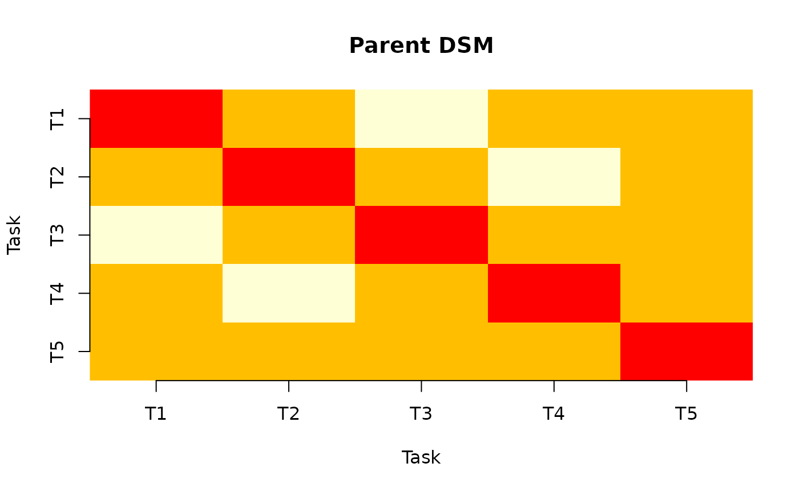
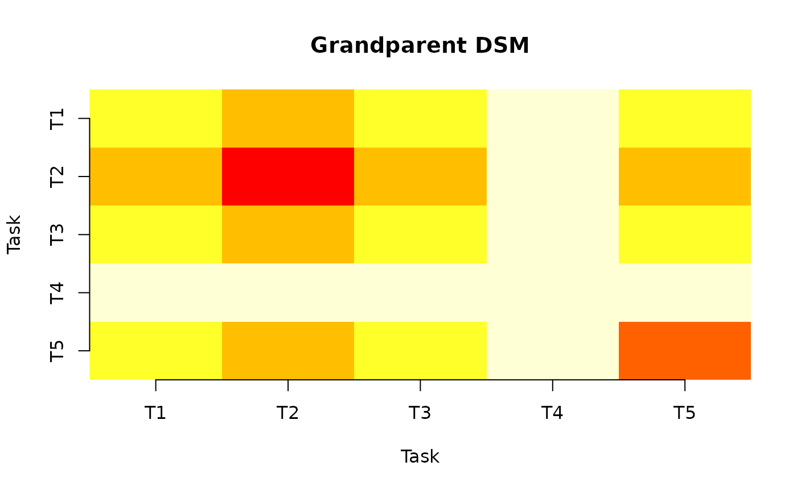

A Design Structure Matrix (DSM) is a square matrix that maps dependencies between tasks in a project. In PRA, DSMs are derived from bipartite relationships: resources are shared across tasks, and risks are shared across resources. These shared dependencies create coupling between tasks that can propagate delays, cost overruns, or failures.
PRA provides two DSM functions:
-
parent_dsm()— the Resource-based “Parent” DSM, showing how many resources are shared between each pair of tasks. -
grandparent_dsm()— the Risk-based “Grandparent” DSM, showing how many risks are shared between each pair of tasks (via the resource layer).
The Resource-Task Matrix
The starting point is the Resource-Task Matrix S,
where rows represent resources and columns represent tasks. An entry
S[i, j] = 1 means resource i is used by task
j.
Parent DSM
The Parent DSM P = t(S) %%
S is a tasks-by-tasks matrix. The diagonal entry
P[j, j] counts how many resources task j* uses. The
off-diagonal entry P[j, k] counts how many resources tasks
j and k share — a measure of coupling.
p <- parent_dsm(S)
print(p)
#> Resource-based 'Parent' Design Structure Matrix
#> Tasks: 5 Resources: 4
#>
#> T1 T2 T3 T4 T5
#> T1 2 1 0 1 1
#> T2 1 2 1 0 1
#> T3 0 1 2 1 1
#> T4 1 0 1 2 1
#> T5 1 1 1 1 2
plot(p)
Tasks that share more resources are more tightly coupled. If a resource is delayed or constrained, all tasks that depend on it are affected.
The Risk-Resource Matrix
The Risk-Resource Matrix R adds a second layer. Rows
represent risks and columns represent resources. An entry
R[i, j] = 1 means risk i affects resource
j.
Grandparent DSM
The Grandparent DSM traces the dependency chain from risks through resources to tasks. The intermediate matrix T = R %% S gives a risks-by-tasks mapping, and the Grandparent DSM is G = t(T) %% T. The off-diagonal entries count how many risks are shared between each pair of tasks.
g <- grandparent_dsm(S, R)
print(g)
#> Risk-based 'Grandparent' Design Structure Matrix
#> Tasks: 5 Resources: 4 Risks: 3
#>
#> T1 T2 T3 T4 T5
#> T1 3 4 3 2 3
#> T2 4 6 4 2 4
#> T3 3 4 3 2 3
#> T4 2 2 2 2 2
#> T5 3 4 3 2 5
plot(g)
Interpreting the DSM
- Diagonal values indicate the total number of resources (Parent) or risks (Grandparent) associated with each task. Higher values mean a task has more dependencies.
- Off-diagonal values indicate coupling between task pairs. Higher values mean more shared dependencies and greater potential for correlated disruption.
- Symmetric structure: both DSMs are always symmetric since shared dependencies are bidirectional.